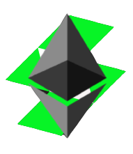

  <ng-container>
  
    <mat-sidenav-container class="example-container">
      <mat-sidenav #sidenav mode="side" opened class="example-sidenav contenido-sidenav"
      [fixedInViewport]="options.value.fixed" [fixedTopGap]="options.value.top"
      [fixedBottomGap]="options.value.bottom" [ngClass]="{'active': isSidenavOpen}">
      
        <div class="cuadro"></div>
  
        <nav class="sidenav">
          <a [routerLink]="['/panel']">Principal</a>
          <a [routerLink]="['/staking']">Staking</a>
          <a [routerLink]="['/grid']">Grid</a>
          <a [routerLink]="['/cripto-bolso']">Cripto Bolso</a>
          <a [routerLink]="['/referidos']">Bonos / Referidos</a>
          <a [routerLink]="['/perfil']">Perfil</a>
          <a [routerLink]="['/panel']">Cerrar Sesion</a>
        </nav>
  
      </mat-sidenav>

      
      <mat-sidenav-content>
        <p style="float: left;" class="sticky-top">
          <button mat-button (click)="sidenav.toggle(); toggleSidenav()" style="color: #000;">
            <mat-icon *ngIf="isSidenavOpen">keyboard_arrow_right</mat-icon>
            <mat-icon *ngIf="!isSidenavOpen">keyboard_arrow_left</mat-icon>
          </button>
        </p>

      </mat-sidenav-content>
      
    </mat-sidenav-container>
    <router-outlet></router-outlet>
    
    
  </ng-container>